The world of Earth-land is home to numerous guilds where wizards apply their magic for paid job requests...
Read MoreAnime Cards
Fairy Tail
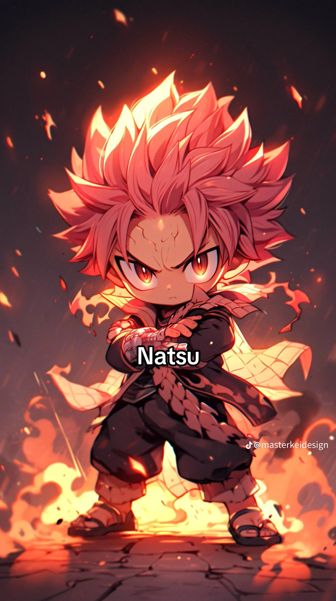
One Piece
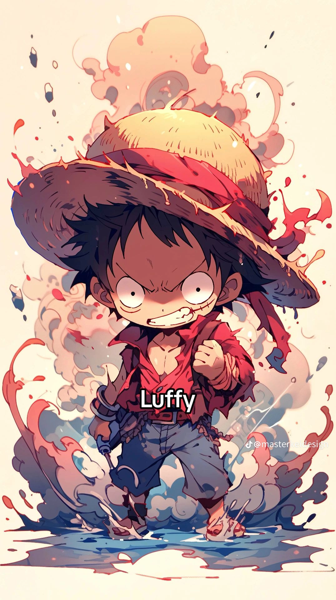
The series focuses on Monkey D. Luffy a young man made of rubber after unintentionally eating a Devil Fruit...
Read MoreBleach
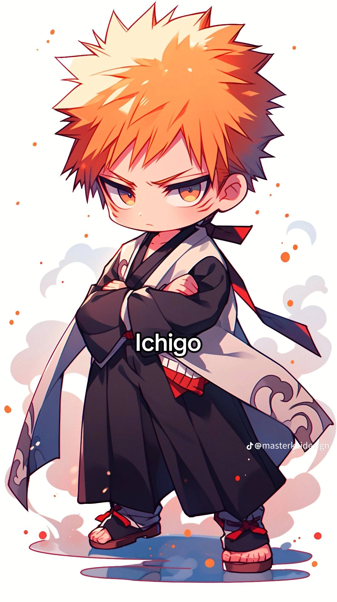
In Karakura Town, high school student Ichigo Kurosaki becomes a substitute Soul Reaper...
Read MoreDemon Slayer
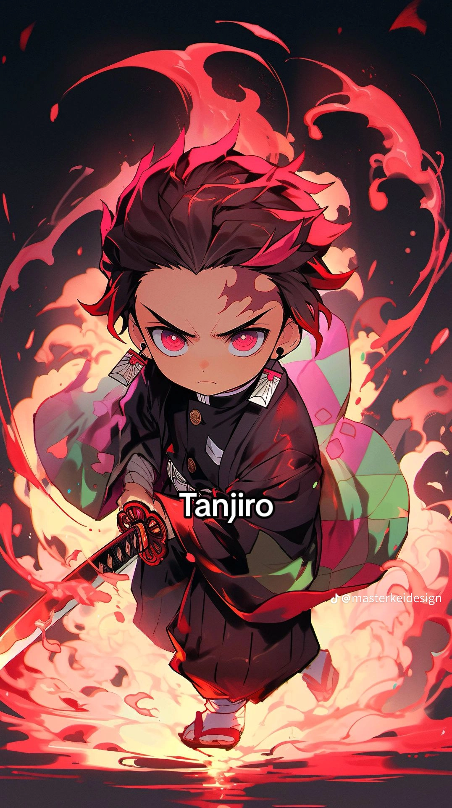
Tanjiro Kamado is a kind-hearted and intelligent boy who lives with his family in the mountains. After his father's death...
Read MoreHunter x Hunter
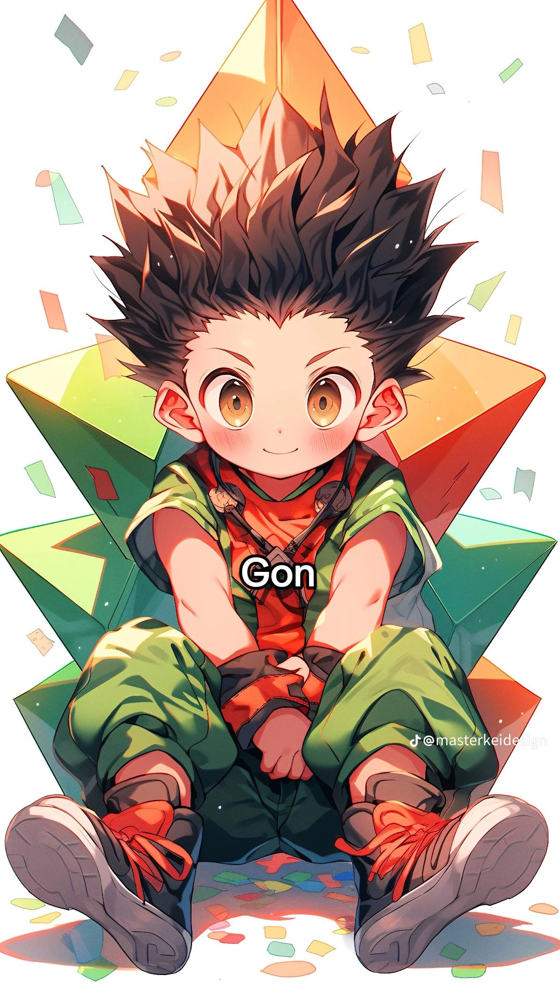
The story follows a young boy named Gon Freecss, who was told all his life that both his parents were dead...
Read MorePokemon
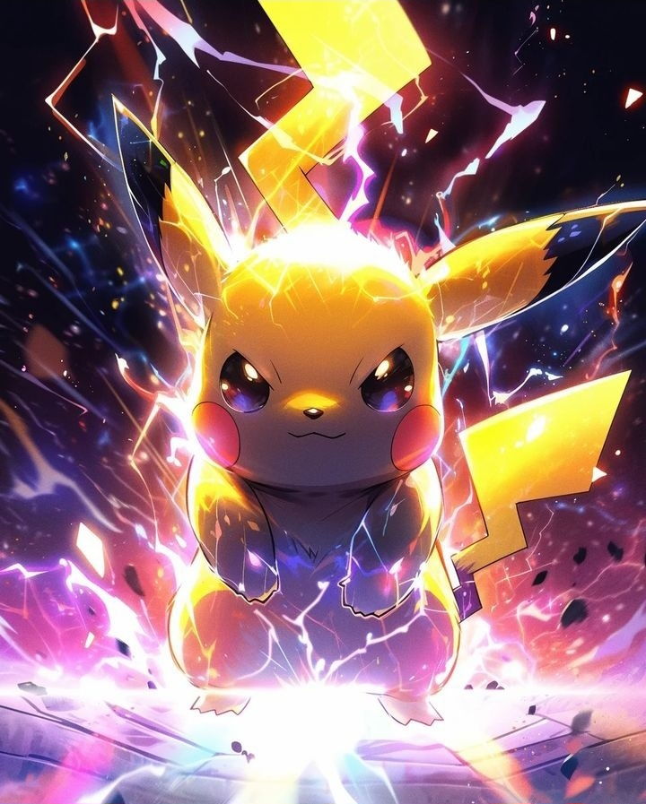
The Pokémon franchise is set in a world in which humans coexist with creatures known as Pokémon...
Read MoreBlack Clover
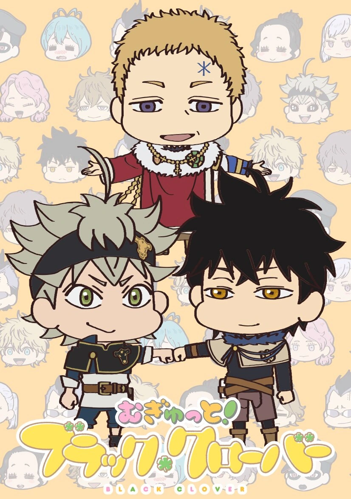
The series focuses on Asta, a young orphan who is left to be raised in an orphanage alongside his fellow orphan, Yuno...
Read MoreSword Art Online
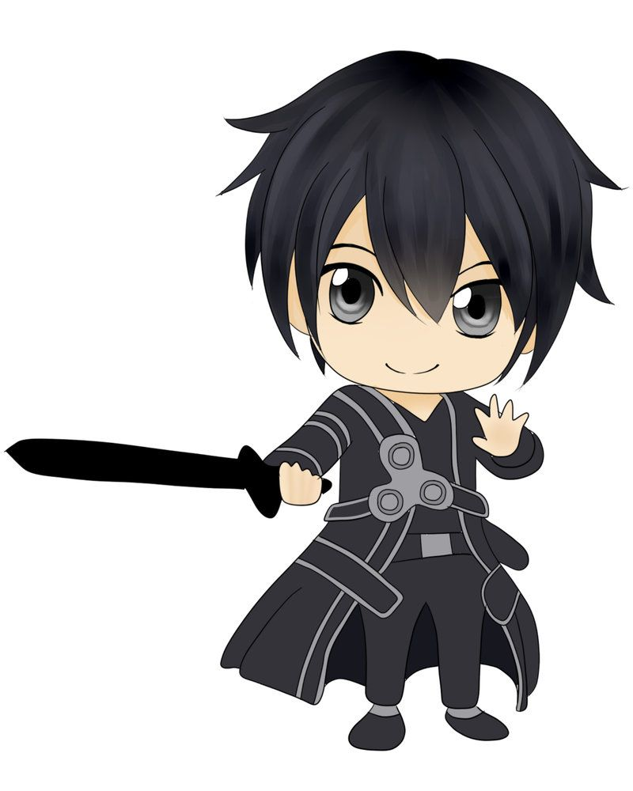
In 2022, a virtual reality massively multiplayer online role-playing game (VRMMORPG) called Sword Art Online (SAO)...
Read MoreAttack On Titans
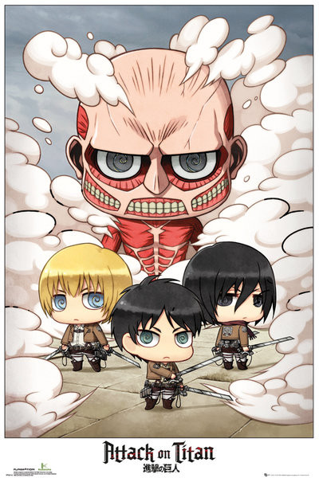
Eren Yeager is a boy who lives in the town of Shiganshina, located on the outermost of three...
Read MoreOverlord
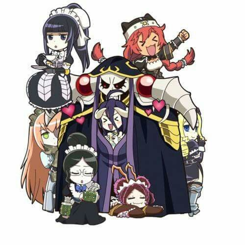
In 2126, a Full-Dive Massively multiplayer online role-playing game or DMMORPG called YGGDRASIL...
Read MoreMy Hero Academia
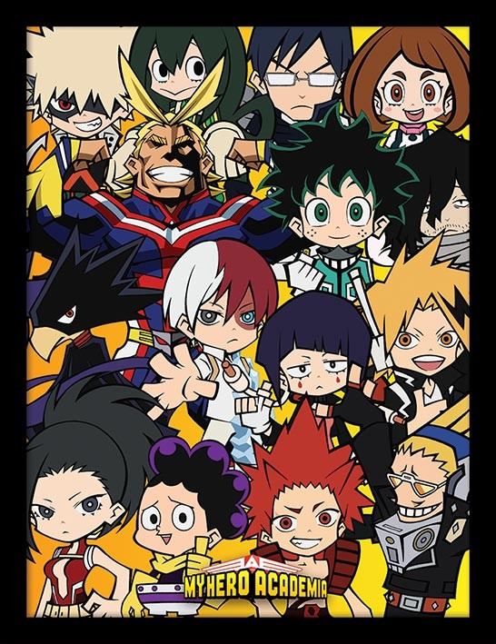
Izuku Midoriya is a young man who dreams of becoming a Hero despite being bullied by his childhood...
Read MoreOne Punch Man
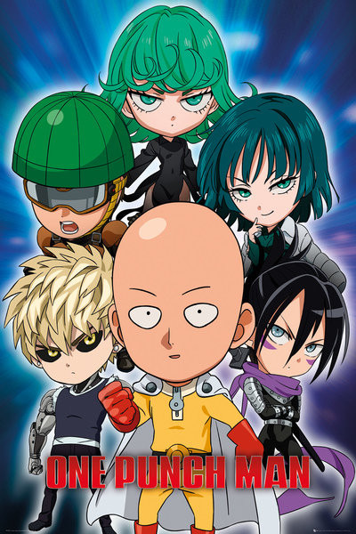
On a supercontinent version of Earth that has four Moons, powerful monsters and supervillains wreak havoc...
Read MoreNaruto
A powerful fox known as the Nine-Tails attacks Konoha, the hidden leaf village in the Land of Fire...
Read MoreDragon Ball Z
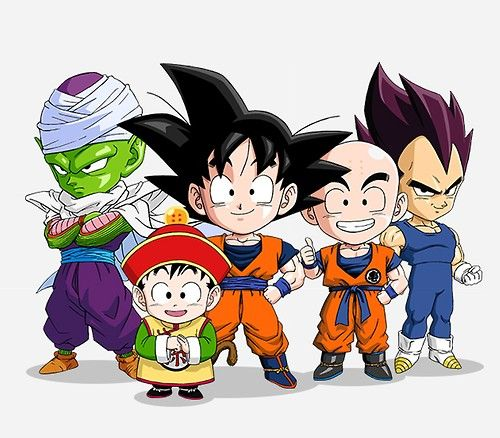
Dragon Ball Z continues the adventures of Son Goku in his adult life as he and his companions defend the Earth against villains...
Read MoreHaikyuu
Junior high school student, Shoyo Hinata, becomes obsessed with volleyball after catching a glimpse of Karasuno High School...
Read MoreKuroko No Basuke
The Teiko Middle School basketball team dominated basketball teams within Japan, winning the middle school Nationals....
Read More